This workbook outlines sets of hands-on exercises surrounding a computer system called the Distant Reader -- https://distantreader.org.
By going through the workbook, you will become familiar with the problems the Distant Reader is designed to address, how to submit content to the Reader, how to download the results (affectionately called "study carrels"), and how to interpret them. The bulk of the workbook is about the later. Interpretation can be as simple as reading a narrative report in your Web browser, as complex as doing machine learning, and everything else in-between.
You will need to bring very little to the workbook in order to get very much out. At the very least, you will need a computer with a Web browser and an Internet connection. A text editor such as Notepad++ for Windows or BBEdit for Macintosh will come in very handy, but a word processor of any type will do in a pinch. You will want some sort of spreadsheet application for reading tabular data, and Microsoft Excel or Macintosh Numbers will both work quite well. All the other applications used in the workbook are freely available for downloading and cross-platform in nature. You may need to install a Java virtual machine in order to use some of them, but Java is probably already installed on your compu9er.
I hope you enjoy using the Distant Reader. It helps me use and understand large volumes of text quickly and easily.
Eric Lease Morgan emorgan@nd.edu
Notre Dame (Indiana)
February 19, 2020
I. What is the Distant Reader, and why should I care?
A. The Distant Reader is a tool for reading
B. How it works
C. What it does
II. Five different types of input
A. Introduction
B. A file
C. A URL
D. A list of URLs
E. A zip file
F. A zip file with a companion CSV file
G. Project Gutenberg and the Distant Reader
G. Summary
III. Submitting "experiments" and downloading "study carrels"
IV. An introduction to study carrels
V. The structured data of study carrels; taking inventory through the manifest
VI. Using combinations of desktop tools to analyze the data
A. Introduction - The three essential types of desktop tools
B. Text editors
C. Spreadsheet/database applications - Excel and Excel recipes
D. Analysis applications
i. Wordle and Wordle recipes
ii. AntConc and AntConc recipes
iii. OpenRefine and OpenRefine recipes
iv. Topic Modeling Tool and Tool recipes
VII. Using command-line tools to "read" a study carrel
A. Building a library
i. Harvest
ii. Add scope notes
B. Feature extraction
i. N-grams
ii. Broader concepts
iii. Questions
iv. Sentences containing keyword
C. Classification and clustering
i. Cosine similarities
ii. Classifying/tagging documents
iii. Visualize clusters
iv. Visualize network diagram of nouns
D. Topic modeling
i. Visualize topic model
ii. Create Modeling Tool metadata file
iii. Visualize comparison of topics to metadata
E. Measuring big ideas, name dropping, and colorfulness
F. Searching
i. Concordancing
ii. Semantic indexing
a. Create semantic index
b. Search semantic index
iii. Free-text indexing with facets
a. Create free-text index
b. Search free-text index
VIII. Summary/conclusion
IX. About the author
The Distant Reader is a tool for reading.
The Distant Reader takes an arbitrary amount of unstructured data (text) as input, and it outputs sets of structured data for analysis — reading. Given a corpus of any size, the Distant Reader will analyze the corpus, and it will output a myriad of reports enabling you to use & understand the corpus. The Distant Reader is intended to supplement the traditional reading process.
The Distant Reader empowers one to use & understand large amounts of textual information both quickly & easily. For example, the Distant Reader can consume the entire issue of a scholarly journal, the complete works of a given author, or the content found at the other end of an arbitrarily long list of URLs. Thus, the Distant Reader is akin to a book’s table-of-contents or back-of-the-book index but at scale. It simplifies the process of identifying trends & anomalies in a corpus, and then it enables a person to further investigate those trends & anomalies.
The Distant Reader is designed to “read” everything from a single item to a corpus of thousand’s of items. It is intended for the undergraduate student who wants to read the whole of their course work in a given class, the graduate student who needs to read hundreds (thousands) of items for their thesis or dissertation, the scientist who wants to review the literature, or the humanist who wants to characterize a genre.
The Distant Reader takes five different forms of input (described in the next section). Once the input is provided, the Distant Reader creates a cache — a collection of all the desired content. This is done via the input or by crawling the ‘Net. Once the cache is collected, each & every document is transformed into plain text, and along the way basic bibliographic information is extracted. The next step is analysis against the plain text. This includes rudimentary counts & tabulations of ngrams, the computation of readability scores & keywords, basic topic modeling, parts-of-speech & named entity extraction, summarization, and the creation of a semantic index. All of these analyses are manifested as tab-delimited files and distilled into a single relational database file. After the analysis is complete, two reports are generated: 1) a simple plain text file which is very tabular, and 2) a set of HTML files which are more narrative and graphical. Finally, everything that has been accumulated & generated is compressed into a single zip file for downloading. This zip file is affectionately called a “study carrel“. It is completely self-contained and includes all of the data necessary for more in-depth analysis.
The Distant Reader supplements the traditional reading process. It does this in the way of traditional reading apparatus (tables of content, back-of-book indexes, page numbers, etc), but it does it more specifically and at scale.
Put another way, the Distant Reader can answer a myriad of questions about individual items or the corpus as a whole. Such questions are not readily apparent through traditional reading. Examples include but are not limited to:
People who use the Distant Reader look at the reports it generates, and they often say, “That’s interesting!” This is because it highlights characteristics of the corpus which are not readily apparent. If you were asked what a particular corpus was about or what are the names of people mentioned in the corpus, then you might answer with a couple of sentences or a few names, but with the Distant Reader you would be able to be more thorough with your answer.
The questions outlined above are not necessarily apropos to every student, researcher, or scholar, but the answers to many of these questions will lead to other, more specific questions. Many of those questions can be answered directly or indirectly through further analysis of the structured data provided in the study carrel. For example, each & every feature of each & every sentence of each & every item in the corpus has been saved in a relational database file. By querying the database, the student can extract every sentence with a given word or matching a given grammer to answer a question such as “How was the king described before & after the civil war?” or “How did this paper’s influence change over time?”
A lot of natural language processing requires pre-processing, and the Distant Reader does this work automatically. For example, collections need to be created, and they need to be transformed into plain text. The text will then be evaluated in terms of parts-of-speech and named-entities. Analysis is then done on the results. This analysis may be as simple as the use of concordance or as complex as the application of machine learning. The Distant Reader “primes the pump” for this sort of work because all the raw data is already in the study carrel. The Distant Reader is not intended to be used alone. It is intended to be used in conjunction with other tools, everything from a plain text editor, to a spreadsheet, to database, to topic modelers, to classifiers, to visualization tools.
I don’t know about you, but now-a-days I can find plenty of scholarly & authoritative content. My problem is not one of discovery but instead one of comprehension. How do I make sense of all the content I find? The Distant Reader is intended to address this question by making observations against a corpus and providing tools for interpreting the results.
The Distant Reader can take five different types of input, and this section describes in detail what they are:
Each of these different types of input are elaborated upon below.
The simplest form of input is a single file from your computer. This can be just about file available to you, but to make sense, the file needs to contain textual data. Thus, the file can be a Word document, a PDF file, an Excel spreadsheet, an HTML file, a plain text file, etc. A file in the form of an image will not work because it contains zero text. Also, not all PDF files are created equal. Some PDF files are only facsimiles of their originals. Such PDF files are merely sets of images concatenated together. In order for PDF files to be used as input, the PDF files need to have been “born digitally” or they need to have had optical character recognition previously applied against them. Most PDF files are born digitally nor do they suffer from being facsimiles.
A good set of use-cases for single file input is the whole of a book, a long report, or maybe a journal article. Submitting a single file to the Distant Reader is quick & easy, but the Reader is designed for analyzing larger rather than small corpora. Thus, supplying a single journal article to the Reader doesn’t make much sense; the use of the traditional reading process probably makes more sense for a single journal article.
The Distant Reader can take a single URL as input. Given a URL, the Reader will turn into a rudimentary Internet spider and build a corpus. More specifically, given a URL, the Reader will:
In short, given a URL, the Reader will cache the URL’s content, crawl the URL one level deep, cache the result, and stop caching.
Like the single file approach, submitting a URL to the Distant Reader is quick & easy, but there are a number of caveats. First of all, the Reader does not come with very many permissions, and just because you are authorized to read the content at the other end of a URL does not mean the Reader has the same authorization. A lot of content on the Web resides behind paywalls and firewalls. The Reader can only cache 100% freely accessible content.
“Landing pages” and “splash pages” represent additional caveats. Many of the URLs passed around the ‘Net do not point to the content itself, but instead they point to ill-structured pages describing the content — metadata pages. Such pages may include things like authors, titles, and dates, but these things are not presented in a consistent nor computer-readable fashion; they are laid out with aesthetics or graphic design in mind. These pages do contain pointers to the content you want to read, but the content may be two or three more clicks away. Be wary of URLs pointing to landing pages or splash pages.
Another caveat to this approach is the existence of extraneous input due to navigation. Many Web pages include links for navigating around the site. They also include links to things like “contact us” and “about this site”. Again, the Reader is sort of stupid. If found, the Reader will crawl such links and include their content in the resulting corpus.
Despite these drawbacks there are number of excellent use-cases for single URL input. One of the best is Wikipedia articles. Feed the Reader a URL pointing to a Wikipedia article. The Reader will cache the article itself, and then extract all the URLs the article uses as citations. The Reader will then cache the content of the citations, and then stop caching.
Similarly, a URL pointing to an open access journal article will function just like the Wikipedia article, and this will be even more fruitful if the citations are in the form of freely accessible URLs. Better yet, consider pointing the Reader to the root of an open access journal issue. If the site is not overly full of navigation links, and if the URLs to the content itself are not buried, then the whole of the issue will be harvested and analyzed.
Another good use-case is the home page of some sort of institution or organization. Want to know about Apple Computer, the White House, a conference, or a particular department of a university? Feed the root URL of any of these things to the Reader, and you will learn something. At the very least, you will learn how the organization prioritizes its public face. If things are more transparent than not, then you might be able to glean the names and addresses of the people in the organization, the public policies of the organization, or the breadth & depth of the organization.
Yet another excellent use-case includes blogs. Blogs often contain content at their root. Navigations links abound, but more often than not the navigation links point to more content. If the blog is well-designed, then the Reader may be able to create a corpus from the whole thing, and you can “read” it in one go.
The third type of input is a list of URLs. The list is expected to be manifested as a plain text file, and each line in the file is a URL. Use whatever application you desire to build the list, but save the result as a .txt file, and you will probably have a plain text file.
Caveats? Like the single URL approach, the list of URLs must point to freely available content, and pointing to landing pages or splash pages is probably to be avoided. Unlike the single URL approach, the URLs in the list will not be used as starting points for Web crawling. Thus, if the list contains ten items, then ten items will be cached for analysis.
Another caveat is the actual process of creating the list; I have learned that is actually quite difficult to create lists of URLs. Copying & pasting gets old quickly. Navigating a site and right-clicking on URLs is tedious. While search engines & indexes often provide some sort of output in list format, the lists are poorly structured and not readily amenable to URL extraction. On the other hand, there are more than a few URL extraction tools. I use a Google Chrome extension called Link Grabber. [1] Install Link Grabber. Use Chrome to visit a site. Click the Link Grabber button, and all the links in the document will be revealed. Copy the links and paste them into a document. Repeat until you get tired. Sort and peruse the list of links. Remove the ones you don’t want. Save the result as a plain text file.‡ Feed the result to the Reader.
Despite these caveats, the list of URLs approach is enormously scalable; the list of URLs approach is the most scalable input option. Given a list of five or six items, the Reader will do quite well, but the Reader will operate just as well if the list contains dozens, hundreds, or even thousands of URLs. Imagine reading the complete works of your favorite author or the complete run of an electronic journal. Such is more than possible with the Distant Reader.
The Distant Reader can take a zip file as input. Create a folder/directory on your computer. Copy just about any file into the folder/directory. Compress the file into a .zip file. Submit the result to the Reader.
Like the other approaches, there are a few caveats. First of all, the Reader is not able to accept .zip files whose size is greater than 64 megabytes. While we do it all the time, the World Wide Web was not really designed to push around files of any great size, and 64 megabytes is/was considered plenty. Besides, you will be surprised how many files can fit in a 64 megabyte file.
Second, the computer gods never intended file names to contain things other than simple Romanesque letters and a few rudimentary characters. Now-a-days our file names contain spaces, quote marks, apostrophes, question marks, back slashes, forward slashes, colons, commas, etc. Moreover, file names might be 64 characters long or longer! While every effort as been made to accomodate file names with such characters, your milage may vary. Instead, consider using file names which are shorter, simpler, and have some sort of structure. An example might be first word of author’s last name, first meaningful word of title, year (optional), and extension. Herman Melville’s Moby Dick might thus be named melville-moby.txt. In the end the Reader will be less confused, and you will be more able to find things on your computer.
There are a few advantages to the zip file approach. First, you can circumvent authorization restrictions; you can put licensed content into your zip files and it will be analyzed just like any other content. Second, the zip file approach affords you the opportunity to pre-process your data. For example, suppose you have downloaded a set of PDF files, and each page includes some sort of header or footer. You could transform each of these PDF files into plain text, use some sort of find/replace function to remove the headers & footers. Save the result, zip it up, and submit it to the Reader. The resulting analysis will be more accurate.
There are many use-cases for the zip file approach. Masters and Ph.D students are expected to read large amounts of material. Save all those things into a folder, zip them up, and feed them to the Reader. You have been given a set of slide decks from a conference. Zip them up and feed them to the Reader. A student is expected to read many different things for History 101. Download them all, put them in a folder, zip them up, and submit them to the Distant Reader. You have written many things but they are not on the Web. Copy them to a folder, zip them up, and “read” them with the… Reader.
The final form of input is a zip file with a companion comma-separated value (CSV) file — a metadata file.
As the size of your corpus increases, so does the need for context. This context can often be manifested as metadata (authors, titles, dates, subject, genre, formats, etc.). For example, you might want to compare & contrast who wrote what. You will probably want to observe themes over space & time. You might want to see how things differ between different types of documents. To do this sort of analysis you will need to know metadata regarding your corpus.
As outlined above, the Distant Reader first creates a cache of content — a corpus. This is the raw data. In order to do any analysis against the corpus, the corpus must be transformed into plain text. A program called Tika is used to do this work. [2] Not only does Tika transform just about any file into plain text, but it also does its best to extract metadata. Depending on many factors, this metadata may include names of authors, titles of documents, dates of creation, number of pages, MIME-type, language, etc. Unfortunately, more often than not, this metadata extraction process fails and the metadata is inaccurate, incomplete, or simply non-existent.
This is where the CSV file comes in; by including a CSV file named “metadata.csv” in the .zip file, the Distant Reader will be able to provide meaningful context. In turn, you will be able to make more informed observations, and thus your analysis will be more thorough. Here’s how:
The zip file with a companion CSV file has all the strengths & weakness of the plain o’ zip file, but it adds some more. On the weakness side, creating a CSV file can be both tedious and daunting. On the other hand, many search engines & index export lists with author, title, and data metadata. One can use these lists as the starting point for the CSV file.♱ On the strength side, the addition of the CSV metadata file makes the Distant Reader’s output immeasurably more useful, and it leads the way to additional compare & contrast opportunities.
The venerable Project Gutenberg is perfect fodder for the Distant Reader, and this section outlines how & why.
A long time ago, in a galaxy far far away, there was a man named Micheal Hart. Story has it he went to college at the University of Illinois, Urbana-Champagne. He was there during a summer, and the weather was seasonably warm. On the other hand, the computer lab was cool. After all, computers run hot, and air conditioning is a must. To cool off, Micheal went into the computer lab to be in a cool space.† While he was there he decided to transcribe the United States Declaration of Independence, ultimately, in the hopes of enabling people to use a computers to "read" this and additional transcriptions. That was in 1971. One thing led to another, and Project Gutenberg was born. I learned this story while attending a presentation by the now late Mr. Hart on Saturday, February 27, 2010 in Roanoke (Indiana). As it happened it was also Mr. Hart's birthday. [1]
To date, Project Gutenberg is a corpus of more than 60,000 freely available transcribed ebooks. The texts are predominantly in English, but many languages are represented. Many academics look down on Project Gutenberg, probably because it is not as scholarly as they desire, or maybe because the provenance of the materials is in dispute. Despited these things, Project Gutenberg is a wonderful resource, especially for high school students, college students, or life-long learners. Moreover, their transcribed nature eliminates any problems of optical character recognition, such as one encounters with the HathiTrust. The content of Project Gutenberg is all but perfectly formatted for distant reading.
Unfortunately, the interface to Project Gutenberg is less than desirable; the index to Project Gutenberg is limited to author, title, and "category" values. The interface does not support free text searching, and there is limited support for fielded searching and Boolean logic. Similarly, the search results are not very interactive nor faceted. Nor is there any application programmer interface to the index. With so much "clean" data, so much more could be implemented. In order to de\monstrate the power of distant reading, I endeavored to create a mirror of Project Gutenberg while enhancing the user interface.
To create a mirror of Project Gutenberg, I first downloaded a set of RDF files describing the collection. [2] I then wrote a suite of software which parses the RDF, updates a database of desired content, loops through the database, caches the content locally, indexes it, and provides a search interface to the index. [3, 4] The resulting interface is ill-documented but 100% functional. It supports free text searching, phrase searching, fielded searching (author, title, subject, classification code, language) and Boolean logic (using AND, OR, or NOT). Search results are faceted enabling the reader to refine their query sans a complicated query syntax. Because the cached content includes only English language materials, the index is only 33,000 items in size.
The Distant Reader is a tool for reading. It takes an arbitrary amount of unstructured data (text) as input, and it outputs sets of structured data for analysis — reading. Given a corpus of any size, the Distant Reader will analyze the corpus, and it will output a myriad of reports enabling you to use & understand the corpus. The Distant Reader is intended to supplement the traditional reading process. Project Gutenberg and the Distant Reader can be used hand-in-hand.
As described in a previous posting, the Distant Reader can take five different types of input. [5] One of those inputs is a file where each line in the file is a URL. My locally implemented mirror of Project Gutenberg enables the reader to search & browse in a manner similar to the canonical version of Project Gutenberg, but with two exceptions. First & foremost, once a search has been gone against my mirror, one of the resulting links is "only local URLs". For example, below is an illustration of the query "love AND honor AND truth AND justice AND beauty", and the "only local URLs" link is highlighted:
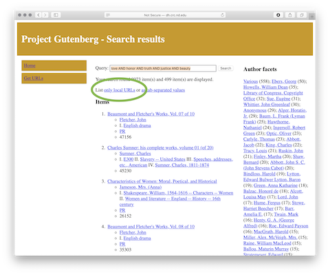
By selecting the "only local URLs", a list of... URLs is returned, like this:
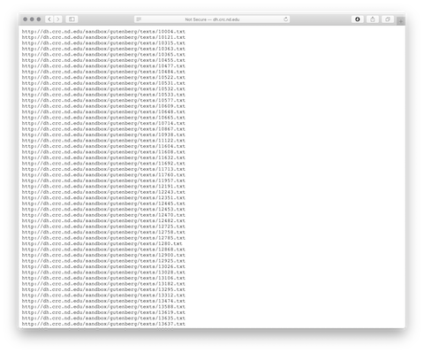
This list of URLs can then be saved as file, and any number of things can be done with the file. For example, there are Google Chrome extensions for the purposes of mass downloading. The file of URLs can be fed to command-line utilities (ie. curl or wget) also for the purposes of mass downloading. In fact, assuming the file of URLs is named love.txt, the following command will download the files in parallel and really fast:
cat love.txt | parallel wget
This same file of URLs can be used as input against the Distant Reader, and the result will be a "study carrel" where the whole corpus could be analyzed -- read. For example, the Reader will extract all the nouns, verbs, and adjectives from the corpus. Thus you will be able to answer what and how questions. It will pull out named entities and enable you to answer who and where questions. The Reader will extract keywords and themes from the corpus, thus outlining the aboutness of your corpus. From the results of the Reader you will be set up for concordancing and machine learning (such as topic modeling or classification) thus enabling you to search for more narrow topics or "find more like this one". The search for love, etc returned more than 8000 items. Just less than 500 of them were returned in the search result, and the Reader empowers you to read all 500 of them at one go.
Project Gutenberg is very useful resource because the content is: 1) free, and 2) transcribed. Mirroring Project Gutenberg is not difficult, and by doing so an interface to it can be enhanced. Project Gutenberg items are perfect items for reading & analysis by the Distant Reader. Search Project Gutenberg, save the results as a file, feed the file to the Reader and... read the results at scale.
† All puns are intended.
[1] Michael Hart in Roanoke (Indiana) - video: https://youtu.be/eeoBbSN9Esg; blog posting: http://infomotions.com/blog/2010/03/michael-hart-in-roanoke-indiana/
[2] The various Project Gutenberg feeds, including the RDF is located at https://www.gutenberg.org/wiki/Gutenberg:Feeds
[3] The suite of software to cache and index Project Gutenberg is available on GitHub at https://github.com/ericleasemorgan/gutenberg-index
[4] My full text index to the English language texts in Project Gutenberg is available at http://dh.crc.nd.edu/sandbox/gutenberg/cgi-bin/search.cgi
[5] The Distant Reader and its five different types of input - http://sites.nd.edu/emorgan/2019/10/dr-inputs/
To date, the Distant Reader takes five different types of input. Each type has its own set of strengths & weaknesses:
The results of the Distant Reader process is the creation of a “study carrel” — a set of structured data files intended to help you to further “read” your corpus. Using a previously created study carrel as an example, this blog posting enumerates & outlines the contents of a typical carrel. A future blog posting will describe ways to use & understand the files outlined here. Therefore, the text below is merely a kind of manifest.
The Distant Reader takes an arbitrary amount of unstructured data (text) as input, and it outputs sets of structured data files for analysis — reading. Given a corpus of any size, the Distant Reader will analyze the corpus, and it will output a myriad of reports enabling you to use & understand the corpus. The Distant Reader is intended to supplement the traditional reading process. Given a question of a rather quantitative nature, a Distant Reader study carrel may very well contain a plausible answer.
The results of downloading and uncompressing the Distant Reader study carrel is a directory/folder containing a standard set of files and subdirectories. Each of these files and subdirectories are listed & described below:
[1] Airivata – https://airavata.apache.org
This section first describes the types of desktop tools (computer programs) the student, researcher, or scholar will need in order to use a Distant Reader study carrel. This section then describes how some of the more specific tools can be used for the purpose of use & understanding.
There are three essential types of desktop tools you will need/want in order to use the content of a study carrel. These types include: text editors, spreadsheet/database applications, and analysis programs.
Text editors read and write plain text files -- files with no formatting and no binary characters. Plain text files usually have a .txt extension. Every single file in a Distant Reader study carrel (except one) is a plain text file, and therefore, every single file (except one) is openable by any text editor.
There are a few essencial tools you will want in a text editor, and the most important is a find/replace function. The function ought to allow you to find any character and change it to something else. This is useful for removing stopwords from a file. It is useful for removing carriage returns or newline characters, thus unwrapping your text. The text editor gets bonus points if the find/replace function supports "regular expressions". The second most important function of a text editor is a sorting feature. Each line in many text files is really an item in a list, and you will invariably want to sort the list. Another very useful function of a text editor, especially used for the purposes of text mining and natural language processing, is the ability to change the case of all letters to either their upper or lower-case forms. Such is the most basic of text normalization/cleaning processes. Religious wars are fought over text editors, and for the purposes of this workbook, only a number are listed, and not all of them support all the functions outlined above: Notepad, Wordpad, Text Edit, Notepad++, Atom, and BBedit. The student, researcher, or scholar will want/need a plain text editor in order to truly exploit the use of the Distant Reader.
Spreadsheet/database applications are designed to read "delimited" files, plain text files where each line is a row in a matrix, and each item is punctuated by some special character such as a tab character or a comma. These items are the columns in the matrix. The whole file is a kin to a spreadsheet or a database. Like a text editor, you will want to use the spreadsheet/database application to support sort. The spreadsheet/database application will need to be able to do arithmetic against items in the file. The spreadsheet/database application ought to include charting features. And the spreadsheet/database application ought to be able to save/export its data to other types of delimited files: tab-delimited files, CSV (comma-separated value) files, Excel workbook files, HTML tables, etc.
The majority of the files in a study carrel are delimited files, and these delimited files are really annotated lists. Examples include lists of word and their parts-of-speech, lists of documents and the URLs they contain, or lists of sentences and the named-entities they include. Given these files the student, researcher, or scholar can compare & contrast the ratio of named entities across a corpus, or they could plot the ebb & flow of an idea over time.
Analysis programs cover a wide spectrum of tools, and for the purposes of the workbook, these tools fall into a number of categories: counting & tabulating, concordancing, topic modeling, and visualizing. For the purpose of this workbook OpenRefine will be used to support counting & tabulating, as well as a few other things. Concordancing is really about find, and a program called AntConc is described. Topic modeling is the process of extracting latent themes from a body of text, and a GUI application called Topic Modeling Tool is demonstrated. Two visualization tools are useful: Wordle and Gephi. The former outputs tag clouds, and the later outputs network diagrams. The student, researcher, or scholar is expected to supplement visualization with the charting functions of spreadsheet/database applications.
Again, every single file (except one) making up a study carrel is a plain text file, and all those files are readable by a text editor. The majority of the files in a study carrel are delimited files, specifically, tab-delimited files, and they can be opened with a spreadsheet/database application. The student, researcher, or scholar will need to have these sort of programs at their disposal. The other, more specific application used in this workbook, are freely available for downloading as well as cross-platform in nature.
Visualized word frequencies, while often considered sophomoric, can be quite useful when it comes to understanding a text, especially when the frequencies are focused on things like parts-of-speech, named entities, or co-occurrences. Wordle visualizes such frequencies very well. For example, the 100 most frequent words in the Iliad and the Odyssey, the 100 most frequent nouns in the Iliad and the Odyssey, or the statistically significant words associated with the word ship from the Iliad and the Odyssey.
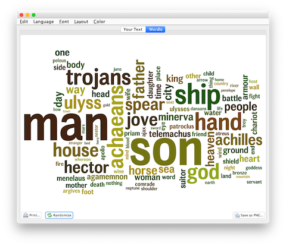
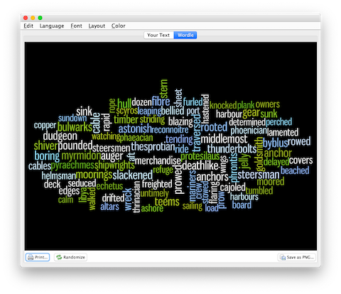
Here is a generic Wordle recipe where World will calculate frequencies:
Congratulations, you have just visualized the whole of your study carrel.
Here is another recipe, a recipe where you supply the frequencies (or any other score):
Notice how you used a variety of generic applications to achieve the desired result. The word/value pairs given to Wordle do not have be frequencies. Instead they can be any number of different scores or weights. Keep your eyes open for word/value combinations. They are everywhere. Word clouds have been given a bad rap. Wordle is a very useful tool.
Concordancing is really a process about find, and AntConc is a very useful program for this purpose. Given one or more plain text files, AntConc will enable the student, researcher, or scholar to: find all the occurrences of a word, illustrate where the word is located, navigate through document(s) where the word occurs, list word collocations, and calculate quite a number of useful statistics regarding a word. Concordancing, dating from the 13th Century, is the oldest form of text mining. Think of it as control-F (^f) on steroids. AntConc does all this and more. For example, one can load all of the Iliad and the Odyssey into AntConc. Find all the occurrences of the word ship, visualize where ship appears in each chapter, and list the most significant words associated with the word ship.
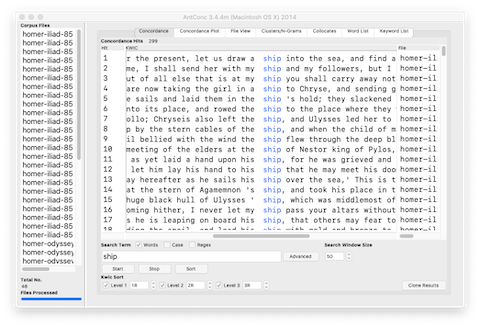
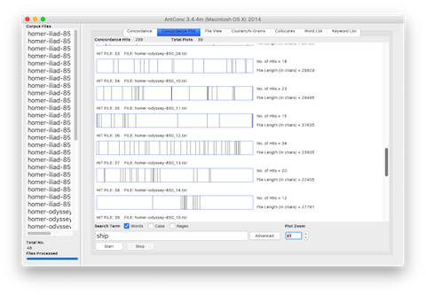
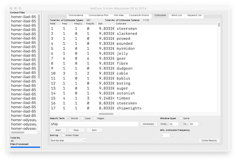
This recipe simply implements search:
The result ought to be a list of phrases where the word of interest is displayed in the middle of the screen. In modern-day terms, such a list is called a "key word in context" (KWIC) index.
This recipe combines search with "control-F":
This recipe produces a dispersion plot, an illustration of where a search term appears in a document:
The result will be a list of illustrations. Each illustration will include zero or more vertical lines denoting the location of your search term in a given file. The more lines in each illustrations, the more times the search terms appear in the document.
This recipe counts & tabulates the frequency of words:
It is quite probable the most frequent words will be "stop words" like the, a, an, etc. AntConc supports the elimination of stop words, and the Reader supplies a stop word list. Describing how to implement this functionality is too difficult to put into words. (No puns intended.) But here is an outline:
Ideas are rarely articulated through the use of individual words; ideas are usually articulated through the use of sets of words (ngrams, sentences, paragraphs, etc.). Thus, as John Rupert Firth once said, "You shall know a word by the company it keeps." This recipe outlines how to list word co-occurrences and collocations:
Again, a word is known by the company it keeps. Use the co-occurrences and collocations features to learn how a given word (or phrase) is associated with other words.
There is much more to AntConc than outlined in the recipes outlined above. Learning more is left up to you, the studen, research, and scholar.
The student, researcher, or scholar can use OpenRefine to open one or more different types of delimited files. OpenRefine will then parse the file(s) into fields. It can makes many things easy such as finding/replacing, faceting (think "grouping"), filtering (think "searching"), sorting, clustering (think "normalizing/cleannig"), counting & tabulating, and finally, exporting data. OpenRefine is an excellent go-between when spreadsheets fail and full-blown databases are too hard to use. OpenRefine eats delimited files for lunch.
Many (actually, most) of the files in a study carrel are tab-delimited files, and they will import into OpenRefine with ease. For example, after all a carrel's part-of-speech (pos) files are imported into OpenRefine, the student, researcher, or scholar can very easily count, tabulate, search (filter), and facet on nouns, verbs, adjectives, etc. If the named entities files (ent) are imported, then it is easy to see what types of entities exist and who might be the people mentioned in the carrel:
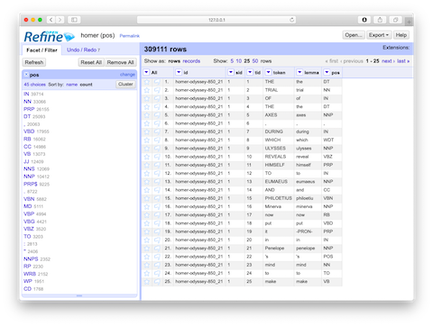
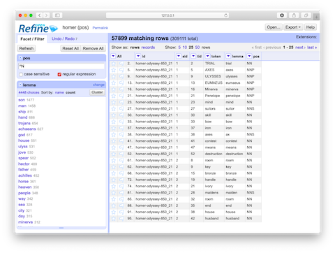
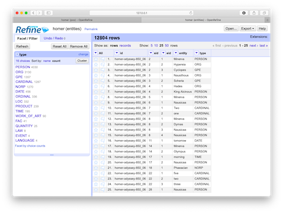
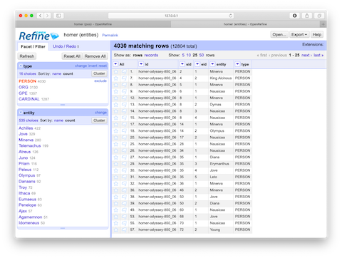
Like everything else, using OpenRefine requires practice. The problem to solve is not so much learning how to use OpenRefine. Instead, the problem to solve is to ask and answer interesting questions. That said, the student, researcher, or scholar will want to sort the data, search/filter the data, and compare pieces of the data to other pieces to articulate possible relationships. The following recipes endeavor to demonstrate some such tasks. The first is to simply facet (count & tabulate) on parts-of-speech files:
Faceting is a whole like like "grouping" in the world of relational databases. Faceting alphabetically sorts a list and then counts the number of times each item appears in the list. Different types of works have different parts-of-speech ratios. For example, it is not uncommon for there to be a preponderance of past-tense verbs stories. Counts & tabulations of personal pronouns as well as proper nouns give senses of genders. A more in-depth faceting against adjectives allude to sentiment.
This recipe outlines how to filter ("search"):
By combining the functionalities of faceting and filtering the student, researcher, or scholar can investigate the original content more deeply or at least in different ways. The use of OpenRefine in this way is akin to leafing through book or a back-of-the-book index. As patterns & anomalies present themselves, they can be followed up more thoroughly through the use of a concordance and literally see the patterns & anomalies in context.
This recipe answers the question, "Who is mentioned in a corpus, and how often?":
This final recipe is a visualization:
A study carrel's parts-of-speech (pos) and named-entities (ent) files enumerate each and every word or named-entity in each and every sentence of each and every item in the study carrel. Given a question relatively quantitative in nature and pertaining to parts-of-speech or named-entities, the pos and ent files are likely to be able to address the question. The pos and ent files are tab-delimited files, and OpenRefine is a very good tool for reading and analyzing such files. It does much more than was outlined here, but enumerating them here is beyond scope. Such is left up to the... reader.
Technically speaking, topic modeling is an unsupervised machine learning process used to extract latent themes from a text. Given a text and an integer, a topic modeler will count & tabulate the frequency of words and compare those frequencies with the distances between the words. The words form "clusters" when they are both frequent and near each other, and these clusters can sometimes represent themes, topics, or subjects. Topic modeling is often used to denote the "aboutness" of a text or compare themes between authors, dates, genres, demographics, other topics, or other metadata items.
Topic Modeling Tool is a GUI/desktop topic modeler based on the venerable MALLET suite of software. It can be used in a number of ways, and it is relatively easy to use it to: list five distinct themes from the Iliad and the Odyssey, compare those themes between books, and, assuming each chapter occurs chronologically, compare the themes over time.
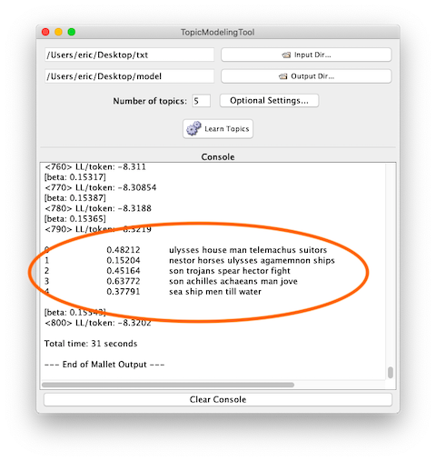
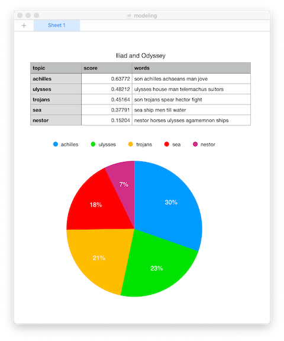
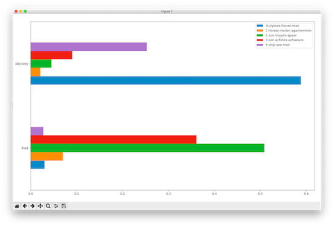
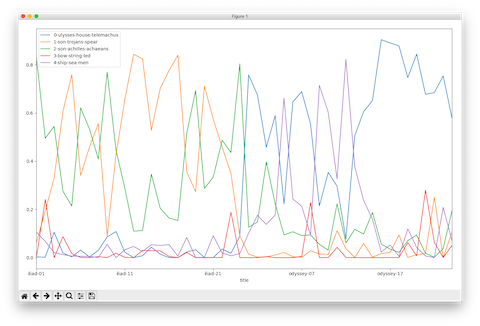
These few recipes are intended to get you up and running when it comes to Topic Modeling Tool. They are not intended to be a full-blown tutorial. This first recipe merely divides a corpus into the default number of topics and dimensions:
This recipe will make things less confusing:
There is no correct number of topics to extract with the process of topic modeling. "When considering the whole of Shakespeare's writings, what is the number of topics it is about?" This being the case, repeat and re-repeat the previous recipe until you: 1) get tired, or 2) feel like the results are at least somewhat meaningful.
This recipe will help you make the results even cleaner by removing nonsense from the output:
Adding individual words to the stopword list can be tedious, and consequently, here is a power-user's recipe to accomplish the same goal:
Now that you have somewhat meaningful topics, you will probably want to visualize the results, and one way to do that is to illustrate how the topics are dispersed over the whole of the corpus. Luckily, the list of topics displayed in the Tool's console is tab-delimited, making it easy to visualize. Here's how:
Because of a great feature in Topic Modeling Tool it is relatively easy to compare topics against metadata values such as authors, dates, formats, genres, etc. To accomplish this goal the raw numeric information output by the Tool (the actual model) needs to be supplemented with metadata, the data then needs to be pivoted, and subsequently visualized. This is a power-user's recipe because it requires: 1) a specifically shaped comma-separated values (CSV) file, 2) Python and a few accompanying modules, and 3) the ability to work from the command line. That said, here's a recipe to compare & contrast the two books of Homer:
The following recipe is very similar to the previous recipe, but it illustrates the ebb & flow of topics throughout the whole of the two books:
Topic modeling is an effective process for "reading" a corpus "from a distance". Topic Modeling Tool makes the process easier, but the process requires practice. Next steps are for the student to play with the additional options behind the "Optional Settings..." dialog box, read the Tool's documentation, take a look at the structure of the CSV/metadata file, and take a look under the hood at pivot.py.
This set of recipes outline how to create a collection of study carrels, and then how to describe them. The first one is simple:
Congratulations, your Distant Reader library now contains two items: homer and your newly created study carrel; your library has doubled in size.
This next recipe, which only requires vanilla Perl, gives a study carrel a more meaningful name and scope:
./bin/add-metadata.pl sans any input to get an idea of the input required./bin/add-metadata.pl homer; the result ought to be a stream of HTML./bin/add-metadata.pl homer > ./library/homer/index.html; the result will be the creation of a new file -- index.htmlBy editing ./etc/homer.txt, you were able to give the study carrel a title, scope, and provenance. Here's how to do the same for your study carrel:
./bin/add-metadata.pl NAME where NAME is the name of your carrel./bin/add-metadata.pl NAME > ./library/NAME/index.html where NAME is the name of your carrelIf a student, researcher, or scholar finds Distant Reader study carrels both interesting and useful, then this librarian bets subsequently created study carrels will be of a similar theme or ilk. Each carrel won't be exactly the same but similar. Moreover, this librarian bets the student, researcher, or scholar will eventually want to compare & contrast the study carrels. By giving study carrels meaningful titles, scope notes, and provenance the collection of carrels becomes even more useful. The carrels also become more shareable. ("Hint, hint.")
A library of previously created study carrels is available from the Distant Reader website. This recipe outlines how to copy any number of those study carrels to your computer. First you will need a few ingredient: Bash, wget, and a program called untar, but that is probably already a part of the Bash environment. Next, you:
./bin/harvest.sh sans any input to get an idea of what type of input it expected./bin/harvest.sh NAME, where NAME is the short name of the study carrel identified in Step #2In the end, you ought to have a collection of at least two or three study carrels. Consider the repeated use of ./bin/add-metadata.pl to give each item more context.
Text mining and natural language processing often requires the enumeration of "features" -- rather numeric characteristics of a text. These characteristics are also called "features". These recipes outline how to text a few sets of features. For example, everybody want to count & tabulate the frequency of ngrams. This first recipe requires Perl and a module called Lingua::EN::Ngram:
./bin/ngrams.pl sans any input to learn what sort of input it expects./bin/ngrams.pl ./library/homer/etc/reader.txt 1 to output all the words and their frequency in HomerBy counting & tabulating the frequent ngrams the student, researcher, or scholar can begin to get an idea regarding the "aboutness" of their corpus. The output of ./bin/ngrams.pl is tab-delimited. Thus the student, researcher, or scholar could redirect the output to a file and subsequently open it in their favoriate spreadsheet application for further processing -- "reading".
The Distant Reader uses an algorithm called XYZZY to generate lists of keywords for every document in a study carrel. These keywords allude to the "aboutness" of a document. Many words in the English language have broader words as their parents. For example, the word "feeling" may be a broader word for the words "love", "sadness", or "elation". Sets of words characterizing this broadness are called "hypernyms". Given a word, the venerable WordNet thesaurus will return a word's broader term.
This recipe takes a type of word found in a study carrel and returns a list of broader terms as well as their frequency, thus giving the reader an additional sense of aboutness. The ingredients for this recipe include Python and a couple of modules: 1) the whole of the nltk.corpus module, and 2) sqlite3. The first comes along for the ride when you install the whole of the ntlk, and the later almost surely comes along for the ride with any Python distribution. Here is how to output broader terms from many different types of words (nouns, verbs, adjectives, lemmas, and keywords) found in a study carrel:
./bin/word2hypernym.py sans any input to get an idea of what the script requires./bin/word2hypernym.py homer noun; the result ought to be a list of broader concepts of all nouns in the carrelThese sorts of frequencies are rather meaningless in-and-of-themselves, but they begin to take on additional meaning when they are compared with other collections (study carrels). For extra credit, add a different study carrel to your library, and then repeat this exercise against it. Then ask yourself, "How are the carrels similar or different?"
In the English language, sentences ending in question marks are... questions, more or less. The Reader enumerates each and every punctuation mark in each and every sentence of each and every document in a study carrel. Thus, it possible to find each question mark which is at the end of every sentence, rebuild the sentences, and output the result. Why would you want to output every question in a study carrel? Well, what do yo think you will find near questions in a document? Answers. And everybody seems to be looking for answers.
This recipe's ingredience include Bash, a program called "parallel", Perl, and the Perl module named "DBI" is also required. Here's how to list the questions in a study carrel:
./bin/list-questions.sh sans any input to get an idea of what the input is./bin/list-questions.sh homer; the result ought to be a list of questions homer study carrelIf a word has been denoted as a keyword, then the student, researcher, or scholar will want to read the sentences with the keyword. Such sentences and their surroundings will usually allude to the aboutness of a document. The ingredients for this recipe include Perl and the Perl module named "DBI". This recipe is simple:
./bin/keyword2sentences.pl sans any input to get an idea of what the input is./bin/keyword2sentences.pl homer; the result ought to a stream of SentenceC. Classification and clustering
i. Cosine similarities (./bin/compare.pl)
ii. Classifying/tagging documents (./bin/classify.pl)
iii. Visualize clusters (./bin/cluster.py)
iv. Visualize network diagram of nouns (./bin/carrel2diagram.sh)
D. Topic modeling
i. Create Modeling Tool metadata file (./bin/db2malletcsv.sh)
ii. Visualize comparison of topics to metadata (./bin/pivot.py)
iii. Visualize topic model (./bin/topic-model.py)
E. Measuring big ideas, name dropping, and colorfulness (./bin/measure-ideas.pl)
Everybody likes to search.
Now-a-days concordancing goes by the name of keyword-in-context indexing. This recipe's ingredients include Perl and two of its library modules: 1) Lingua::Concordance which does the actual work, and 2) Text::BarGraph used to create a sort of dispersion chart/plot. Here goes:
./bin/concordance.pl sans any input to get an idea of what input is expected./bin/concordance.pl ./library/homer/etc/reader.txt peace; the result will be two fold: 1) a list of phrases centered on the given word (or regular expression), and a bar graph illustrating where the given word occurs in the textThe concordance script demonstrated here is no match for the functionality of AntConc, but the script is relatively quick and easy.
A semantic index is essentially a matrix of vectors where each vector denotes a word in a corpus. Query words are first looked up in the matrix and then linear algebra is used to compare the associated vector with the other vectors in the matrix. When vectors "point" in the same direction, then they are considered similar. When vectors point in opposite directions, then they may be akin to antonyms. Searches against semantic indexes return relationships. Given three words of input, some semantic queries may solve an analogy. [Eric waves his arms around in an attempt to point to a few places in a three-dimensional space in order to illustrate the definition of an analogy in a semantic index.]
Semantic indexes require "a lot" of data in order to truly be effective; the following recipes do not do semantic indexing justice because of the size of the corpus is too small. That said, the first recipe creates a semantic index, and the process is heavy. The ingredients include: Bash, Python, and a few few modules. One Python module is called "gensim" and it supports many natural languaging functions. Gensim does all the hard work of this recipe. The NLTK is needed, merely for its stop words. Lastly, a large module called "spacy" is required. Like Gensim, it supports a wide variety of natural language processing functions, but it used here mainly to parse the corpus into sentences. After installing the necessary modules:
./bin/carrel2vec.sh to get an idea of what is required./bin/carrel2vec.sh homer; the result will be a set of diagnostic messages outlining the indexing process, and after at least a couple of minutes the process ought to completeIn the end a new file will have been created -- ./library/homer/etc/reader.vec. The resulting file is an index, and the index is not really readable with your text editor.
Once the index is created, you will want to search it. This recipe only requires Python, and more specifically the Gensim module. While the index supports many functions, the following recipe only returns words which have similar vectors to the search word:
./bin/search-vec.py san any input... to get an idea of what is required./bin/search-vec.py homer war; the result ought to be a list of "similar" words and a similarity score where scores closer to 100 are exact matchesYour search results will most likely be disappointing, especially since the similarity scores will almost always be near 100. This is because the corpus is not large enough to be effective. For extra credit, harvest an additional study carrel or two and repeat the previous two recipes accordingly, but keep in mind, the indexing process is not fast. The size and scope of the study carrel named "knowledge" begins to demonstrate the ideas behind semantic indexing.
Free-text indexing with faceted results is the type of searching we have all come to love. Enter a word, get back (faceted) results, select an item, and get the associated document. Unfortunately, preparing this recipe is by far the most complicated in the workbook, thus, only an outline will be presented here.
The ingredients are many. First you need a free-text indexer and search engine called "Solr", which is pretty much the gold-standard these days. Installing Solr is as easy a downloading the distribution, uncompressing it, and saving it in a location where you can find it again. Solr requires Java, and you probably already have Java installed. Second, you need Perl, and more specifically, you need two Perl modules: 1) DBI which will interact with the Distant Reader's underlying SQLite database, and 2) WebService::Solr which takes the database output and feeds it to Solr. WebService::Solr is not a small installation.
The first few steps of the following recipe are the most complicated:
./bin/solr startWhew, if you got all the way through, then the hardest part is over. You now need to index a carrel. Here's how:
./bin/db2solr.pl sans any input... to get an idea of what is required./bin/db2solr.pl homerIf you have gotten this far, then the output probably looked like the contents of your study carrel, and it is all down hill from here.
Solr is now running. An index has now been created. It is time to search. The following recipe supports free-text and fielded queries with Boolean logic. The results are faceted on the names of people and keywords. The search results are relevancy ranked, and each item in the list includes basic bibliographics as well as a pointer to the associated document:
./bin/search-solr.pl sans any input... to get an idea of what is required./bin/search-solr.pl homer war; the result ought to be a narrative textEverybody likes to search, but even more, everybody loves to get. Remember, the Distant Reader caches the content it reads, and in this way the study carrels are independent of the Web. Search for items in your index and open them from the cache.
Eric Lease Morgan has been practicing librarianship since 1984, but he has been consistently writing software since 1976. He is currently employed at the University of Notre Dame where he works in the Navari Family Center for Digital Scholarship. In the Center he provides text mining and natural language processing services to the University community.